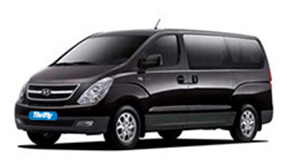

Автомобили в Израиле
Компания Vastama Ltd официально зарегистрированное(регистрационный номер 515052702) в 2014 году в Израиле предприятие с ограниченной ответственностью.
Vastama Ltd — является официальным дистрибьютером ведущей компании по аренде прокату автомобилей Dollar-Thrifty.
Прокат аренда автомобилей и миниванов в Израиле является одним из основных направлений деятельности компании.
Мы в компании Vastama всегда убеждены в том, что вы получите именно то, что вам требуется по самым лучшим и выгодным ценам.
К вашим услугам представительства-отделения по аренде прокату автомобилей во всех крупных городах Израиля, в том числе в Международном аэропорту «Бен Гурион» и в городе Эйлат.

Миниваны 9 мест
В Израиле вы можете встретить довольно много 9(8 пассажиров + водитель) местных машин, это связано с тем что у нас две ведущие категории населения - религиозные
евреи и арабское население - это семьи с большим количеством детей и поэтому они нуждаются в многоместных и безопасных автомобилях

Миниваны 8 мест
В Израиле вы можете встретить довольно много 8(7 пассажиров + водитель) местных машин, это связано с тем что у нас две ведущие категории населения - религиозные
евреи и арабское население - это семьи с большим количеством детей и поэтому они нуждаются в многоместных и безопасных автомобилях

Миниваны 7 мест
В Израиле вы можете встретить довольно много 7(6 пассажиров + водитель) местных машин, это связано с тем что у нас две ведущие категории населения - религиозные
евреи и арабское население - это семьи с большим количеством детей и поэтому они нуждаются в многоместных и безопасных автомобилях
У нас эти автомобили представлены категорией V которая включает в себя такие автомобили как
Ford Galaxy, Ssangyong Rodius, Kia Sorento, Seat Alambra, Mitsubishi Outlander и другие,
или категорией U которая включает в себя такие автомобили как Mazda 5 Nissan Kashkay и другие, все автомобили с автоматической коробкой передач